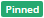
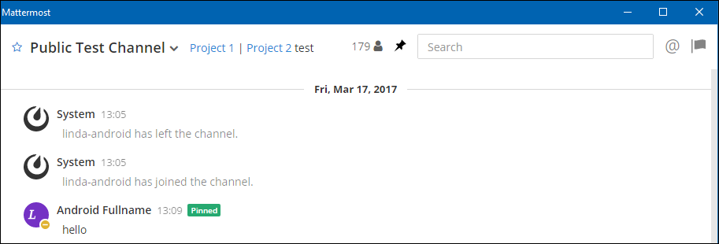

Pinning Messages¶
All members of a channel can pin important or useful messages to that channel. The list of pinned messages is visible to all channel members.
Pinned messages are marked with the pinned icon, . For example:
To view the list of pinned messages:
To view the complete list of pinned messages, click the pin icon  , located at the top of the channel. The Right-Hand Sidebar opens to show the list of pinned messages. For example:
, located at the top of the channel. The Right-Hand Sidebar opens to show the list of pinned messages. For example:

To pin a message:
- Mouse over the message that you want to pin. The [...] link appears.
- Click [...] > Pin to channel
To un-pin a message:
- Mouse over the message that you want to un pin. The [...] link appears.
- Click [...] > Un-pin from channel